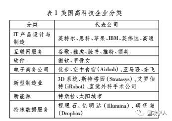
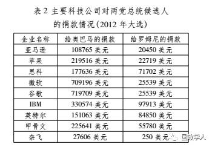

收录于合集

作者简介： 李峥，中国现代国际关系研究院美国研究所助理研究员；
文献来源： 《现代国际关系》2016年第12期。
摘要： 依靠雄厚的经济实力和高超的政治传播技巧，高科技集团已经成为美国政治生态中一股不可忽视的力量，其崛起对美国国内的“大政府”“小政府”的哲学分野提出挑战。整体而言，高科技利益集团并不希望政府过多介入市场调节，鼓励宽松的市场竞争环境，主张先经营后监管。这些理念与传统的“小政府”类似。但是，该集团支持及希望政府扩大公共投资，推动教育改革，升级美国基础设施以适应新技术和产品的需求，这又与“大政府”理念近似。
美国高科技利益集团的崛起
“在法国，创办新事业中居于首位的是政府，在英国是权贵，而在美国，你一定会发现协会组织。” 法国政论家 托克维尔 早在美国成立初期就意识到利益集团在这一新生民主国家中的独特作用。利益集团是美国公民和企业维护其自身利益、表达其政治诉求、影响政府决策和国会立法的常见组织形态，可根据参与者分为以下几种类型： 一 是由特定政治、宗教、价值观信仰的个人所组成的集团； 二 是由特定职业或从业人员组成的集团； 三 是由特定行业企业组成的集团。利益集团是特定人群和企业的“政治代言人”，其主要职责是推广本集团支持的政策和政治主张，通过各种政治游说和政治压力引起联邦和地方政府、立法机构的重视。利益集团也是群体或行业内部的重要协调者，包括协调本行业内部的成员间矛盾，以及代表本群体与其他利益集团开展互动。在组织运作上，利益集团有若干有代表性的游说机构作为核心，成员企业在机构中派驻代表，参与机构的运营和发展，为机构提供资金、技术、人力等方面的支持，共同支持这些游说机构作为本利益集团的权威代表。
高科技产业 是新世纪以来美国高速发展的一个产业集群，互联网企业和硬件厂商是该产业集群最主要的组成部分。该集群发端于信息技术产业和互联网经济， 20世纪90年代成为美国国民经济的重要组成部分。 苹果、微软、甲骨文、谷歌等公司就是在这一时期发展壮大的。金融危机前后，伴随着一系列关键的技术突破，信息技术开始进一步对传统产业渗透，美国又出现了一批以先进技术和商业模式试图颠覆传统产业的公司。这些新企业虽然从行业属性上属于制造业、能源业等传统产业，但在很多方面与信息科技企业有共同之处，例如同属发展历史较短的创业型公司，多诞生于硅谷等美国创业创新摇篮，与风险投资和资本市场关系紧密，甚至很多高管和创始人都来自信息科技公司等。这一利益和价值观趋近、拥有高度重合人脉网的产业集群自然地逐渐形成一个利益同盟。
很长一段时期内， 美国高科技企业并没有足够意愿结成利益集团，其发展总体受益于美国当前的政策和法律制度，没有感到建立利益集团的必要性。 在这段时期，美国高科技企业往往采取两种方式体现其政治影响力。其一是加入与其经济利益趋近的成熟利益集团，例如商会等组织中。其二是通过直接支持某个政治领导人的方式施加影响。2013年前后，由于内外发展环境发生深远变化，高科技产业集群形成利益集团的态势愈发明显。外部环境上，美国高科技产业的技术垄断能力显著下降，中国、日本、欧洲等其他主要经济体在高科技产业上与美国竞争日趋激烈。内部环境上，美国高科技产业的深度发展产生了新的生产力与生产关系、生产关系与上层建筑之间的矛盾。美国高科技产业与传统产业的利益冲突和博弈日趋激烈。
高科技产业集群形成利益集团的突出标志是2013年非政府组织“前进美国（FWD.us）”的成立。 该机构属性是职业游说机构，政治活跃程度很高。该机构在全美9个城市设有分支机构，定期组织当地志愿者参与政治声援活动。脸书创始人扎克伯格是“前进美国”的主要推动者，其创始人还包括领英（LinkedIn）联合创始人霍夫曼，碉堡箱（Dropbox）公司工程副总裁，谷歌、雅虎、特斯拉、奈飞等企业的负责人也为该机构背书。“前进美国”像许多美国利益集团核心实体机构一样，提出了一系列在经济、政治上的具体主张和政策建议，其主要诉求在移民问题上，提出为已经在美国实习工作的留学生提供入籍的“路线图”。除“前进美国”以外，其他一些高科技企业的行业协会组织也在这一时期快速发展，如经常代表美国科技产业向国会、总统提交诉求的科技服务产业联合会（TSIA）和代表中小科技企业和从业人员利益的计算科技产业联合会（CompTIA），后者在2014年合并了游说组织科技美国后开始向政治游说机构转型。
高科技利益集团试图通过一系列的政策诉求与政治主张，为其后续发展塑造出更为有利的内外环境。 这些诉求涉及广泛，一些已经被前进美国等非政府组织或美主要科技巨头直接提出，另一些则体现在高科技企业对国会和政府的幕后游说上。 在对外关系上， 高科技利益集团的主要诉求包括高度重视知识产权保护和商业机密议题，在严格保护知识产权和商业机密的基础上推动发展中国家向美国开放信息产业市场。 在国内经济上， 高科技利益集团的主要诉求在于打破美国国内的商业壁垒，尤其是各州为保护本州企业所设定的一些有地区歧视性的法律规定。 在法律制度上， 高科技利益集团的诉求包括完善法律制度上的缺陷和盲点，尽快确立一些可能对美国高科技产业发展影响深远的法律基本框架。 在国内政治上， 高科技利益集团高度支持放宽高科技移民的准入和在美定居标准，支持性别平等，倡导和支持女权，积极维护LGBT团体的平等、合法权益，还支持大力改进美国的教育体系，尤其是提升基础教育的质量，为美国科技产业输送更多本土人才。

高科技利益集团是不可忽视的政治力量
虽然美国高科技利益集团发展的历史不长，但依靠雄厚的经济实力和高超的政治传播技巧，该集团已经成为美国政治生态中一股不可忽视的力量。
第一，高科技利益集团深度介入美国联邦选举和地方选举，支持符合其利益的政客。
根据美国选举观察机构统计，在2016年大选季中，高科技利益集团在美国各主要产业中高居第4位，仅次于金融保险、医疗服务和传媒公司。总统候选人无法忽视高科技集团不断膨胀的影响力，常在选举过程中专门举办针对高科技企业的募款会，或邀请高科技企业的高官参与其私人聚会。在地方选举中，高科技企业的影响力也有所表现。2014年中期选举中，印度裔民主党参选人坎纳在多家科技企业支持下向七任国会众议员迈克尔·本田发起挑战。依靠高科技企业的鼎力支持，年仅38岁的坎纳拥有了达到本田3倍的竞选经费，并在最后选战中仅以2%的微弱劣势败给了得到民主党领导层及奥巴马本人支持的本田。
第二，高科技利益集团开始参与政府经济战略的制定，并与美国政府希望推动美经济转型升级的一系列具体政策高度结合。 奥巴马任内，白宫新建并扩大了一系列与科技相关的政策咨询机构。高科技企业的高管和技术专家成为这些机构的重要成员，将自己的看法和设想提供给美国联邦政府，供以决策参考。奥巴马扩大了白宫的科学与技术办公室规模，新增了白宫首席技术官的职位。2009年，奥巴马新设的总统科学技术顾问委员会，成为总统及美国科技决策机构国家科技委员会的主要幕僚团，不少企业界和风险投资的代表人物加入其中。在高科技利益集团推动下，奥巴马政府任内提出一系列有前瞻性、符合美国高科技产业发展趋势的战略和计划，如“先进制造业计划”、“美国创新战略”、“国家纳米技术计划”、“脑科学计划”、“国家机器人计划”等。
第三，高科技利益集团成为美国政府在对外政策中重要的国内影响因素，并试图使其利益诉求与美国对外战略相互配合。 高科技利益集团常通过多种渠道影响政府的外交决策，期望政府感受到各方压力：如通过行业协会向政府及国会发送请愿信；资助智库和研究机构发布该利益集团所关注议题的研究报告；集团内企业发布研究报告；通过筹款或私人渠道向政府要员直接提出要求等。其中一个例子是中美关系中的“网络安全议题”。2010年以来，美国高科技企业高度关注所谓“中国网络窃密”问题，要求美国政府就此向中国施压，避免美国企业的知识产权和商业机密受损。正是在高科技企业的大力推动下，该议题对中美关系的影响不断扩大，到2015年已经成为中美关系中的核心矛盾之一。高科技企业还积极帮助美国政府推进对其有利的外交战略，借美国外交之手获取海外市场。例如，谷歌董事长施密特曾出访古巴、朝鲜、缅甸等与美国较为敌对的国家，促其接受“互联网自由”理念，开放国内互联网接入。
第四，高科技利益集团的诉求与联邦政府有冲突，但联邦政府不愿与其正面碰撞。 随着高科技利益集团的崛起，其利益诉求开始冲击政府已有的政策与法律，并在一些法律监管的空白地带与政府争夺制定规则的主导权。2014～2015年，美国政府与互联网企业在网络安全立法上发生分歧。奥巴马政府希望通过国内立法加强美国的网络安全能力建设，并要求企业承担相应责任，加强内部网络安全建设，且强制其与政府分享关于网络安全威胁的情报信息。高科技企业则担心与政府分享情报会影响企业信誉，阻碍其在海外开展业务。最终在两者协调下，国会通过的《网络安全法》照顾了科技企业的多数关切，未强制企业与政府分享情报。
第五，高科技利益集团对地方政府及立法机构的影响力有限且不均衡，也避免与美国内其他利益集团发生冲突。 高科技企业在美国分布不均，主要集中在东西海岸，其中加州占全美高科技岗位的1/6，得州占1/12。相对于中央政府，高科技利益集团在州一级层面上的政治影响力显著降低，无法左右其推行对该集团有利的政策和立法。在一些州，州政府及议会甚至会在其他利益集团要求下制订针对高科技企业的限制措施，影响此类企业在当地扩展业务。但在加州、马萨诸塞州、纽约州、得州等高科技企业较发达的地区，该利益集团能得到一定照顾。虽然资金雄厚，该集团能够调动的选民直接支持有限，这在地方层面就显得较为弱势。在处理与其他利益集团的纷争中，高科技利益集团也较为低调，与其争取海外利益或与政府讨价还价的姿态显著不同。
高科技利益集团改变美国利益集团图谱
高科技利益集团的发展正在缓慢改变美国国内的利益集团图谱，成为支持保护自由选择的生活方式和经济上“小政府”的重要力量，并将随着美国经济升级转型而扮演更加重要的角色。

第一，高科技利益集团的诞生历史不长，尚未形成较为清晰的党派倾向。 在绝大多数经济议题上，该利益集团政策诉求与共和党长期支持的主张近似，如支持自由贸易，反对政府过度干预市场，反对政府规模过度膨胀。另一方面，该集团在家庭背景、价值观和社会议题上更偏向于民主党。该集团也是支持同性恋合法化、堕胎合法化、女权的坚定力量，与民主党在这些议题上的态度重合。
第二，高科技利益集团增强了一些“非主流”群体的力量，也激起美国保守势力的激烈反弹。 例如，LGBT团体之前虽有一定社会影响，却常被人视为社会边缘，缺乏与美国主流社会对接的途径。高科技利益集团既在价值观上支持LGBT团体追求平等权利的诉求，也拥有大量带有LGBT倾向的员工，如苹果首席执行官库克等高管也明确表达其与众不同的性取向。依靠高科技利益集团的持续资金支持和影响力背书，LGBT团体的国内影响力与日俱增。外来移民也受益于高科技利益集团的崛起。然而，美国宗教保守势力并不适应LGBT团体的壮大。在无法指望通过立法手段限制或驱逐非法移民的情况下，特朗普提出的加固“边境墙”等极端反移民政策得到国内保守势力的鼎力支持，并在本次大选中形成一股反对移民、反对全球化的洪流。
第三，高科技利益集团的崛起对美国国内的“大政府”“小政府”的哲学分野提出挑战。 高科技利益集团的经营模式、盈利模式与传统产业有很大区别，其政治经济哲学与传统的四种理念有一定区别。整体而言，高科技利益集团并不希望政府过多介入市场调节，鼓励宽松的市场竞争环境，主张先经营后监管。这些理念与传统的“小政府”类似。但是，该集团支持及希望政府扩大公共投资，推动教育改革，升级美国基础设施以适应新技术和产品的需求，这又与“大政府”理念近似。高科技利益集团支持两党中倾向于认同上述理念的政客，这在一定程度上正在逐渐瓦解“大政府”与“小政府”之间的差异。
第四，高科技利益集团代表着美国最先进、最有附加值的产业，该集团不仅将争取更大的政治影响力，也会深刻影响美国民众的日常生活。 共享经济的公司正在改变美国传统的私有观念，也可能会对一系列法律和政策带来影响。该集团政策诉求还处于萌芽和发展阶段，并未完全成熟。随着技术发展，还会有更多先进技术冲击传统的观念及政策法规体系，需要政府加以立规建制。
本研究也注意到，正像美国其他的利益集团一样，高科技利益集团内部也并非紧密团结，一些企业有着不同的政策诉求和政治信仰。企业高管和一般员工的政治信仰也不尽相同。甲骨文公司总裁是共和党总统参选人卢比奥的主要支持者之一，卢比奥、杰布·布什等较为温和的共和党政客同样能够得到高科技利益集团的青睐。 这意味着该集团对美国政治生态的影响还有很大的不确定性。
高科技利益集团已经成为中美关系中一个不可忽视的重要因素。该集团不仅可对美国政府和国会施压，让一些该集团高度关注的议题成为美国对华政策中的优先目标，又可作为一股独立的，代表美国未来经济利益的团体与中方直接接触，传递其诉求，绕开政治障碍与中国直接达成合作。2015年9月习近平主席访美期间，会见并出席了有28位中美互联网巨头参加的“中美互联网论坛”，这在中美关系历史上并不多见。苹果公司不顾美方警告率先向中国监管机构开放了部分源代码，微软公司与中国电子科技集团公司开展合作，为中国政府专门定制安全可靠的Win10系统。但是，如果该集团的切身利益受到严重冲击，或对中国市场不抱希望，该集团也极有可能改变对华态度。

来源：社会科学文摘节选自《现代国际关系》
2016年第12期
筛选：汪乐乐
编辑：沉安
声 明
国政学人微信公众平台系非盈利学术平台。建立之初衷是方便广大学人进行学术研究，促进学术的传播和交流，不做任何商业用途。如有任何权利问题，请直接与我们联系。
您可能还会喜欢：